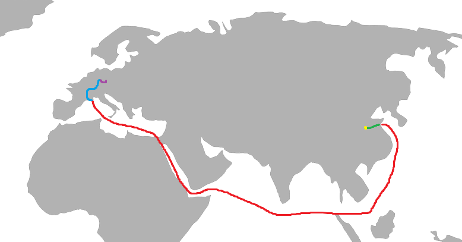
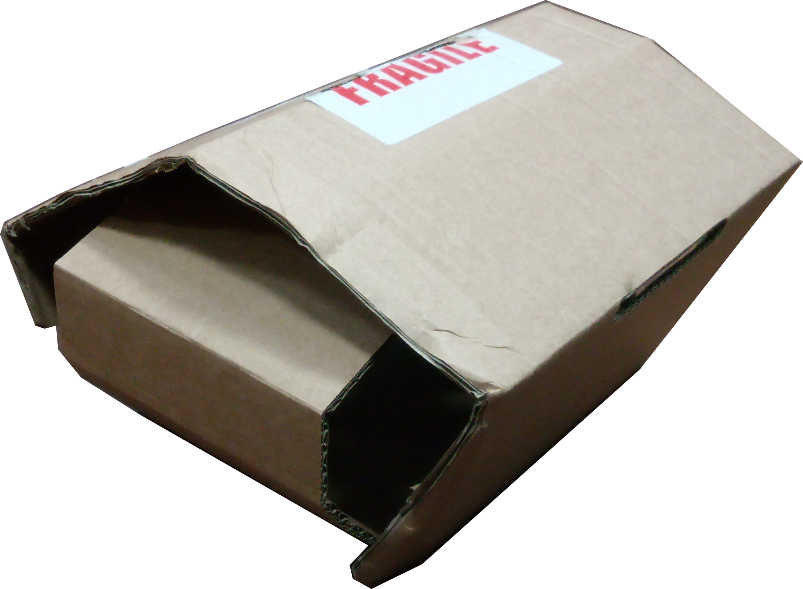
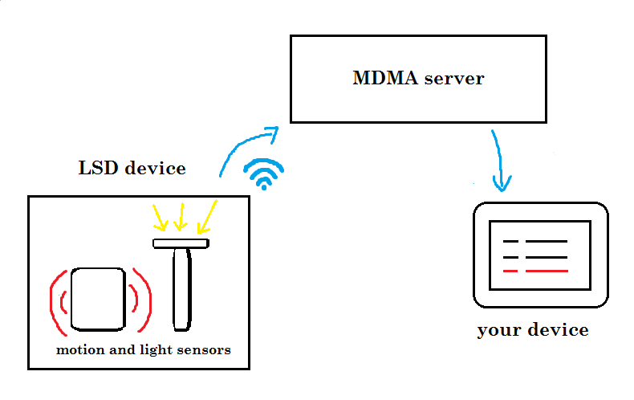
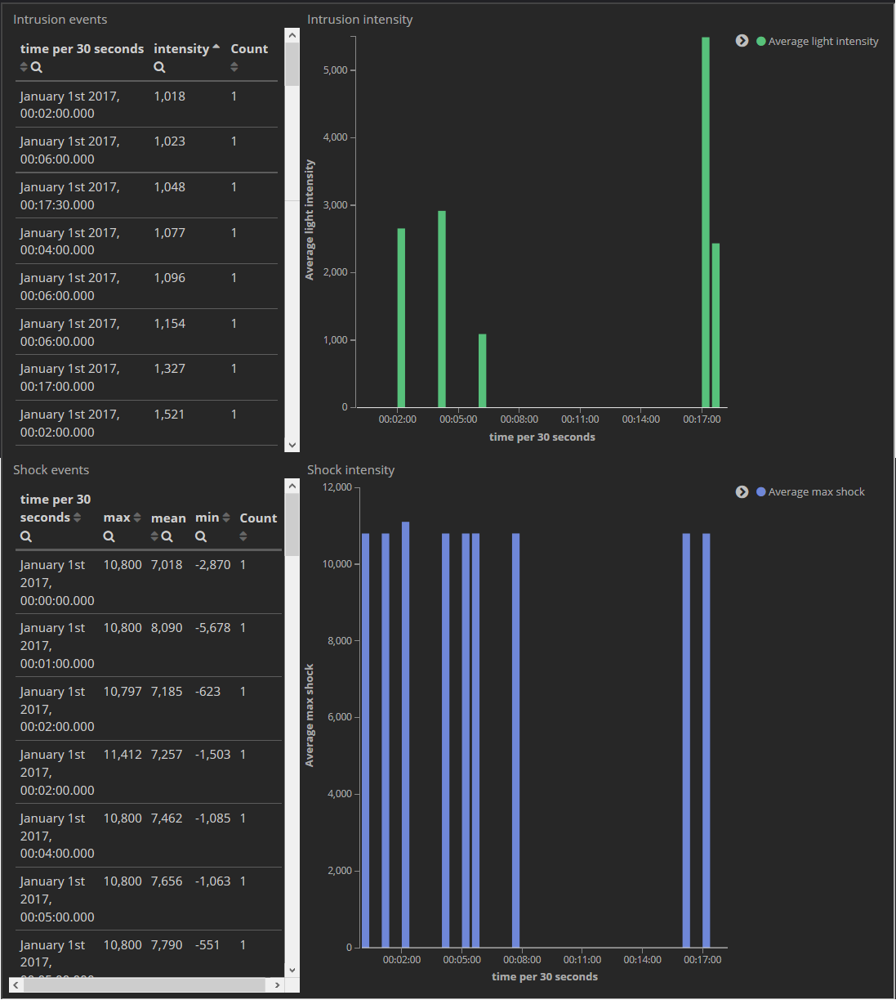

Before your package reaches your customers, it will change hands many times. Each new courier, shipping company, or post service presents a new risk that your fragile products will be damaged in the transportation process. The typical journey of your package might look like this, with four different entities handling it.

Unfortunately, our research shows that it is often difficult to ascertain when the package was damaged and who should be held responsible. This creates additional cost to you, your customers, and makes the whole shipping process less effective and more annoying. What can you do to recover your costs when a package arrives like this, but none of the shipping parties are taking responsibility?

The solution - LSD

LSD is a connected Internet of Things device, which monitors the shocks and light exposure your package experiences.
Utilising a simple and robust architecture, it is capable of detecting any shocks resulting from improper handling of the package. Moreover, the integrated light sensor detects any attempt to open the package.
LSD is a connected device - it sends all its data to secure MDMA servers. We process the data for you, and give you an accurate and useful summary of what happened to your package and when it happened.
Want to see more? Click here to see the demo of LSD.
Advantages of LSD
small, lightweight, simple, and inexpensive solution
compatible with any package
easily scalable to thousands of packages
all processing done for you on secure MDMA servers
user-friendly online interface to check the state of your package
The dashboard below is a preview of what MDMA provides to our LSD users. We process the data for you, so that you can enjoy detailed overview of your packages without the IT overhead. The data dashboard is accessible from any device, from any location at any time.
The data are updated in real time, so you always know what is happening to your package.
LSD sensor logs the time of the shock or detection of light inside the package. With this information you always know, who is responsible for the damage done, which can greatly reduce your shipping overheads. We also provide you with intensity of the shocks and light measured inside the box, so you can easily pinpoint the source of your damaged package.
Use this button to reset the timeframe displayed in the graphs. To zoom into a timeframe use the tooltip in the graph area. The real-time graphs are replaced by an image for illustration if the website is not running on our server.

LSD is the product of MDMA, acronym for Meng, David and Martin Association.
MDMA is a triumvirate of inspiration, built around a single common purpose - to transform the way responsibility for package damage is determined. LSD is the expression of this purpose.
After finishing his compulsory military service, where he excelled in shooting at the 150m range and inflating rafts, Meng turned to software engineering. He spent time working, studying and/or lurking in such renowed institutions as Imperial College London, Barclays plc. and Reddit. He is a master of Python and related languages and snakes. In his spare time, he enjoys interior decoration and cooking. Sometimes, both simultaneously.
Coming from rural Devon, David is naturally hardened, which is manifested in his persistence and patience. Supported by his array of tools like wire cutters and pliers, he excels in all things electronic. His wide experience includes working on top secret military projects for Her Majesty and his third year power coursework. When not in the lab, David is a passionate baker and chess player.
As a first generation immigrant, Martin is keen on taking all opportunities, jobs, and benefits associated. This nature has lead him to discover a variety of jobs, ranging from professional dancer through to construction worker and dirty capitalist. Engineering is where he eventually anchored himself, and he now provides consulting services to MDMA. Out of the office, he takes interest in fashion and animal rights.